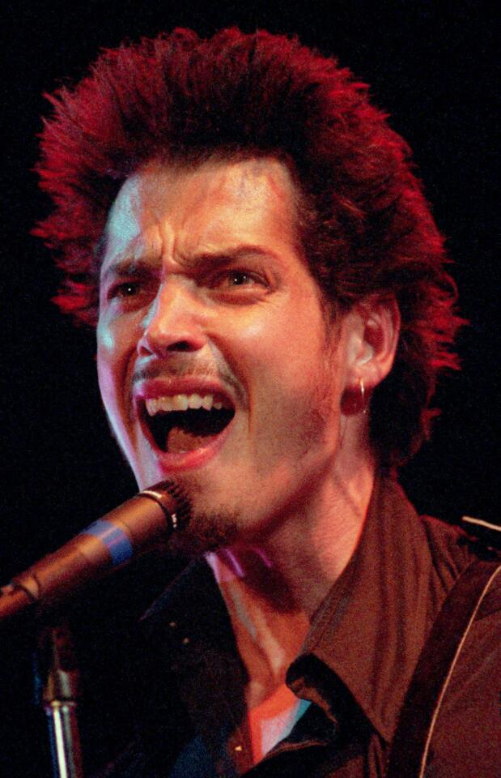

Chris Cornell (1964-2017) fue un influyente musico estadounidense, reconocido como una de las vices mas poderosas y versátiles de la historia del rock.
Fue vocalista y guitarrista principal compositor de bandas emblemáticas como Soundgarden,Audioslave y el proyecto tributo Temple of the Dog.
Con un gran rango vocal de casi cuatro octavas, Cornell se convirtió en una figura central del movimiento grunge de Seattle en los años 90.